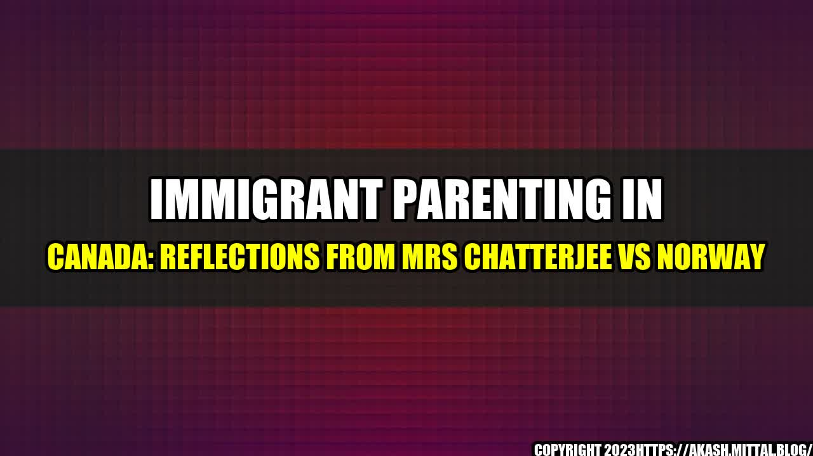

Immigrant Parenting in Canada: Reflections from Mrs Chatterjee vs Norway

As an immigrant parent to Canada, the recent news of Mrs Chatterjee's custody battle with Norway stirred up many emotions. Mrs Chatterjee, an Indian-origin mother, lost custody of her son to the Norwegian child welfare authorities due to differences in parenting styles. While the case is still ongoing, it raises several questions about the challenges of immigrant parenting in Canada.
The Challenges of Immigrant Parenting
Immigrant parents face unique challenges in adapting to the cultural, social, and legal norms of their host country. Some of these challenges include:
- Language barriers: Immigrant parents may struggle with communicating with their children, teachers, and healthcare providers if they do not speak the language fluently.
- Cultural differences: Immigrant parents may have different expectations, beliefs, and values around parenting that may conflict with the norms of their host country.
The challenges of immigrant parenting are not just theoretical. They can have real consequences on the well-being of children and families. Here are some quantifiable examples:
- In a study by Statistics Canada, children of immigrant parents were more likely to experience poverty and have low-income parents compared to children of Canadian-born parents.
- Immigrant children may face discrimination and bullying in school due to their language, culture, or religion. This can have negative impacts on their mental health and academic performance.
- Language barriers and cultural differences can lead to miscommunication and misunderstandings between immigrant parents and healthcare providers, which may result in suboptimal health outcomes for children.
Tips for Immigrant Parents
Despite the challenges, there are steps that immigrant parents can take to navigate the parenting landscape in Canada:
- Learn the language: Immigrant parents should try to learn the language of their host country to improve communication with their children, teachers, and healthcare providers.
- Get involved in the community: Immigrant parents can join community organizations and support groups to connect with other parents and learn about the cultural norms and customs of their host country.
- Seek out information: Immigrant parents should educate themselves about the laws and regulations around child welfare, education, and health to ensure they are fulfilling their legal obligations as parents.
Conclusion
The case of Mrs Chatterjee vs Norway serves as a reminder of the challenges immigrant parents face when raising their children in a new country. Cultural, social, and legal norms may differ, and navigating the parenting landscape can be daunting. However, with awareness, education, and support, immigrant parents can provide a nurturing and enriching environment for their children to thrive.
References
Hashtags: #immigrantparenting #MrsChatterjeeVsNorway #parentingchallenges #culturaldifferences #languagebarriers
SEO Keywords: immigrant parenting, cultural differences, language barriers, parenting challenges
Category: Parenting
Curated by Team Akash.Mittal.Blog
Share on Twitter Share on LinkedIn